CNC pendant pro UGS / GRBL – kompletní návod
Ruční ovladač k frézce Lunyee 3018 Pro Ultra: 21 tlačítek, enkodér, 19 LED, USB klávesnice (RP2040). Výroba DPS frézováním, panel z hliníku pálený laserem, krabička 3D tisk.
Stav balíku: 19. 10. 2026 (kontrola DPS proti KiCadu)
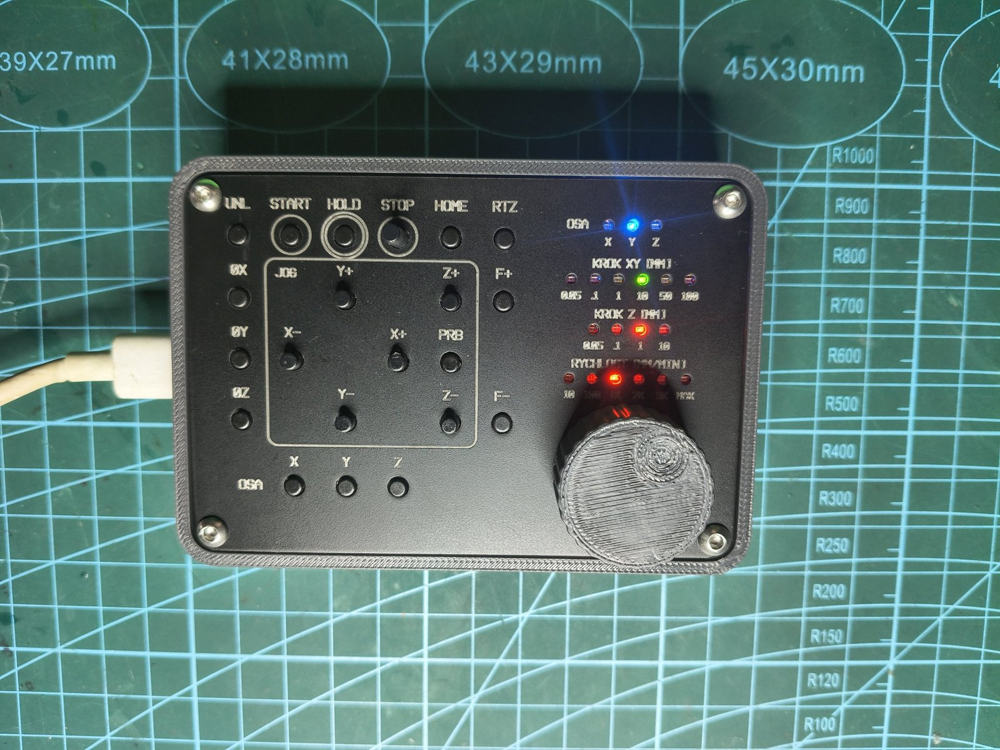
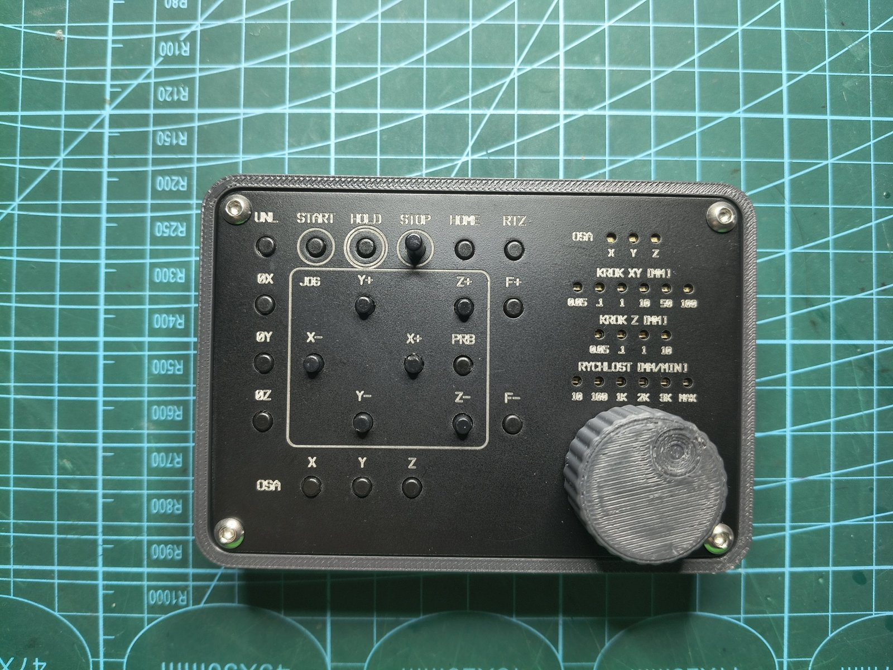
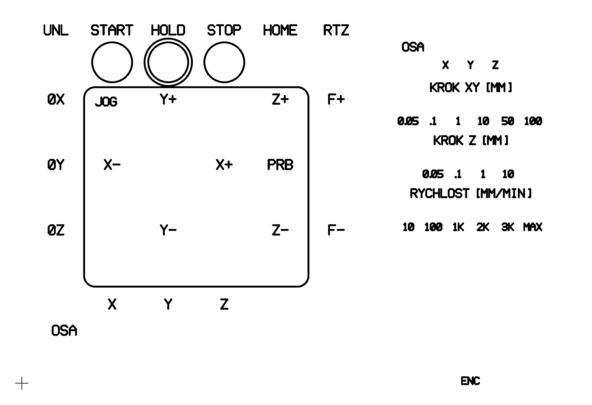
- Co je v balíku
- Software, nástroje, materiál
- Přípravek z MDF
- Frézování DPS (A, B, C)
- Osazení a pájení
- Firmware a testy
- Nastavení UGS
- Ovládání pendantu
- Panel – frézování a laser
- Krabička, sloupky, knoflík
- Kompletace
- Řešení problémů
1. Co je v balíku
| Složka | Obsah |
|---|---|
| 00_obrazky | Fotky hotového kusu (fotky/), náhledy sestavy a desek (měď, rozmístění) vykreslené z aktuálních souborů KiCad. |
| 01_DPS_KiCad | Projekty KiCad 10 všech tří desek (schéma, DPS, vlastní knihovny pendant.pretty, interaktivní BOM desky B). |
| 02_DPS_frezovani | G-kódy z FlatCAMu pro desky A, B, C seřazené podle postupu (A1…A6, B1…B4, C1…C3), gerbery, projekty FlatCAM, výškové mapy z Candle, starší verze. |
| 03_pripravek_MDF | Výkres přípravku (DXF), G-kódy na jeho výrobu (Fusion) a program na vrtání rohových děr desky A. |
| 04_panel_cela | 1 – frézování hliníkového panelu (Fusion), 2 – laser (SVG vše v jednom, projekt LightBurn, test výkonu, G-kódy), 3 – alternativa s kapsou v MDF, DXF výkresy panelu. |
| 05_krabicka_3D_tisk | Krabička (STEP k tisku, OpenSCAD, skript pro Fusion), projekt tisku knoflíku (3MF), distanční sloupky, knoflík ve výškách 9–14 mm. |
| 06_firmware_Arduino | cnc_pendant_v11 (doporučený), cnc_pendant (v10, záloha), testovací programy. |
| 07_UGS_zkratky | 34 souborů klávesových zkratek pro UGS (kopírují se do konfigurace UGS). |
| 08_soupiska_BOM | Soupiska součástek a mechaniky (CSV pro Excel), výpočet odporů LED. |
2. Software, nástroje, materiál
Software
| Program | K čemu |
|---|---|
| KiCad 10 | úpravy schémat a desek, export gerberů |
| FlatCAM 8.992 | gerbery → G-kód (projekty .FlatPrj jsou přiložené) |
| Candle (GRBL Control) | frézování DPS s výškovou mapou (.map) |
| Autodesk Fusion | programy přípravku a panelu, skript krabičky |
| LightBurn | pálení podkladu a čela laserem |
| Arduino IDE 2 + jádro arduino-pico (Earle Philhower) | firmware do RP2040 |
| UGS Platform (Universal Gcode Sender) | ovládání frézky – pendant v něm mačká klávesové zkratky |
| Slicer (Bambu Studio / PrusaSlicer / Orca) | tisk krabičky, sloupků, knoflíku |
Nástroje do frézky
| Nástroj | Použití |
|---|---|
| rytecká V-fréza (šířka řezu 0,16–0,18 mm v hloubce 0,1 mm) | izolace mědi A, B, C |
| vrták 0,4 mm | průchody (via) na desce A |
| vrták 1,0 mm | vývody součástek (A, B, C) |
| vrták 2,5 mm | rohové díry DPS + díry pro kolíčky v přípravku |
| stopková fréza 1,8 mm | ořez desek, kapsa Ø10 pro enkodér |
| vrták 2 a 3 mm, stopková fréza 3 mm | hliníkový panel |
| stopková fréza 4 mm (nebo 3,175), frézovací hlava 40 mm | přípravek z MDF |
| sonda / krokosvorky pro Z (probe) | nula Z a výšková mapa |
Materiál
- Cuprextit 100 × 70 mm: oboustranný pro desku A, jednostranný pro B a C (C stačí ~35 × 37 mm).
- MDF 12 mm, 150 × 130 mm (přípravek), 4 ocelové kolíčky Ø2,5 mm.
- Hliník 1 mm na panel (polotovar větší než 95 × 65), černý lak.
- Součástky – viz 08_soupiska_BOM/BOM_CNC_pendant.csv.
3. Přípravek z MDF
Přípravek drží polotovar DPS na 4 kolíčcích Ø2,5 mm v rozteči 88 × 58 mm (stejná rozteč jako montážní díry desek). Díky kolíčkům jde oboustranná deska A otočit a druhá strana přesně navazuje. Přišroubuje se do závitových děr M6 stolu (rastr 54 × 50 mm).
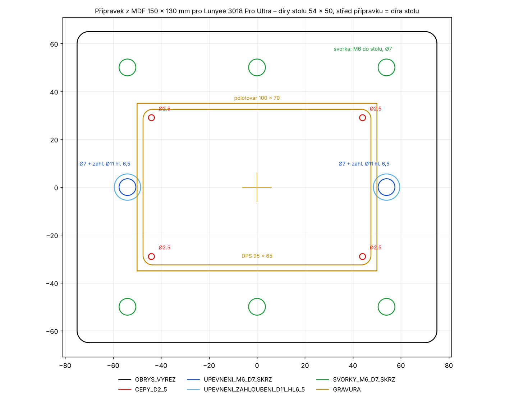
Výroba přípravku
Programy jsou z Fusionu, nula X0 Y0 = levý dolní roh MDF, Z0 = horní plocha MDF. Střed přípravku (75, 65) je zároveň střed jedné díry M6 ve stole.
| Soubor 03_pripravek_MDF/frezovani_pripravku/ | Nástroj | Co dělá |
|---|---|---|
| P1_zarovnani_plochy_FACEv03_frezahlava40.nc | hlava Ø40 | srovná horní plochu (Z0 až 0) |
| P2_diry_pro_kolicky_vrtak2.5.nc | vrták 2,5 | 4 díry pro kolíčky, hloubka 4 mm, body (31,36) (119,36) (31,94) (119,94) |
| P3_upinaci_diry_zahloubeni_a_obrys_freza4.nc | fréza 4 | upínací díry Ø7 + zahloubení, díry pro svorky a ořez obrysu do hloubky 12 mm (obsahuje M0 – výměna nástroje) |
| alternativy_jen_diry/ | fréza 4 / 3,175 | jen díry bez obrysu (když je MDF už nařezaný) |
- Přišroubuj přípravek šrouby M6 do stolu, kolíčky zatím nevkládej.
- Najeď přesně nad levou dolní díru pro kolíček a zapiš si strojní souřadnice (MPos). Tenhle bod je nula pro desku A i pro rohové díry všech desek; deska B a C mají nulu jinde (viz dále).
4. Frézování DPS
- Většina z nich spouští vřeteno příkazem
M03bez otáček S (S12000 mají jen A2 a A5). GRBL pak použije poslední nastavené otáčky – před spuštěním pošli v konzoliM3 S12000a zaseM5, nebo nastav otáčky v Candle. - Nula Z = povrch mědi, vždy sondou. Před izolací (A1, A2, B2, C1) změř novou výškovou mapu v Candle (mřížka 7 × 5, jako v přiložených .map). Přiložené mapy platí jen pro tehdejší polotovar – jsou tu pro informaci o nastavení.
- Ořezy (A6, B4, C3) jdou na celou hloubku 1,8 mm ve 3 krocích a nemají můstky. Desku drží kolíčky a oboustranná páska – pásku dej i pod oblast, která se odřízne.
- Rychlosti jsou v hlavičce každého souboru (např. izolace F400–500, vrtání po krocích 0,5 mm s F300, ořez F120).
Deska A – horní (oboustranná) tlačítka, 74HC595
Nula X0 Y0 = střed levé dolní díry kolíčku přípravku (= střed levé dolní montážní díry desky). Všechny programy desky A mají tuto nulu.
| # | Soubor | Nástroj | Strana nahoře |
|---|---|---|---|
| A0 | 03_pripravek_MDF/vrtani_DPS/A0_vrtani_rohovych_der_2.5mm_do_pripravku.nc | vrták 2,5, hl. 6 mm | libovolná |
| A1 | A1_spodni_med_ZRCADLENO_freza0.16.nc | V-fréza (0,16) | spodní (zrcadleno) |
| A2 | A2_horni_med_FCUV01_bez_der_freza0.18.nc | V-fréza (0,18) | horní |
| A3 | A3_vrtani_0.4mm_prokovy.nc | vrták 0,4 | horní |
| A4 | A4_vrtani_1.0mm_soucastky.nc | vrták 1,0 (díry 1,0 i 1,1) | horní |
| A5 | A5_kruh_D10_enkoder_freza1.8.nc | fréza 1,8 | horní |
| A6 | A6_vyriznuti_obrysu_freza1.8.nc | fréza 1,8 | horní |
- Přilep polotovar 100 × 70 oboustrannou páskou do vyznačeného obdélníku na přípravku (kolíčky vyndané). Nula XY na díru kolíčku, Z sondou na měď.
- A0 – vyvrtá 4 rohové díry Ø2,5 skrz desku do přípravku. Vlož kolíčky – od teď deska sedí na kolíčcích.
- A1 – spodní měď. Výšková mapa, frézování. Program je zrcadlený přes vodorovnou osu, takže nahoře je strana, která bude spodní.
- Otoč desku přes vodorovnou osu (horní hrana dolů, jako když otáčíš list v bloku nahoru) a nasaď ji zpět na kolíčky. Rozteč děr je souměrná, takže sedí. Znovu nula Z a nová výšková mapa.
- A2 – horní měď. Verze „bez děr“ nefrézuje kolem rohových děr, kde jsou kolíčky (verze s dírami je ve starsi_programy).
- A3 průchody 0,4 mm, A4 díry 1,0 mm (program vrtá všechny 1,0 i 1,1 jedním vrtákem, postupně po 0,5 mm do −1,7).
- A5 – kapsa Ø10 skrz desku pro průchod enkodéru (střed X72 Y12).
- A6 – ořez obrysu 95 × 65.
- Rohové díry Ø2,5 převrtej ručně na Ø3,2 (šrouby M3).
Starší verze programů (první pokusy horní mědi, pilotní díry, stará mapa) jsou v 02_DPS_frezovani/A_horni/starsi_programy, jen pro archiv.
Deska B – spodní (jednostranná, měď dole) Pico, enkodér
Nula X0 Y0 = levý dolní ROH desky B, tj. bod 3,5 mm vlevo a 3,5 mm pod středem díry kolíčku. Najeď na díru kolíčku, posuň o X−3,5 Y−3,5 a tam vynuluj.
| # | Soubor 02_DPS_frezovani/B_spodni/ | Nástroj |
|---|---|---|
| B1 | B1_vrtani_rohovych_der_2.5mm_do_pripravku.nc | vrták 2,5, hloubka 6 mm (skrz do přípravku) |
| B2 | B2_med_ZRCADLENO_bez_rohovych_der_freza0.18.nc | V-fréza (0,18), F500 |
| B3 | B3_vrtani_1.0mm.nc | vrták 1,0 |
| B4 | B4_vyriznuti_obrysu_freza1.8.nc | fréza 1,8 |
- Polotovar mědí nahoru na přípravek, nula XY (viz výše), Z na měď.
- B1 → vlož kolíčky → výšková mapa → B2 → B3 → B4.
- Měď je zrcadlená přes vodorovnou osu (frézuje se ze strany mědi). Hotová deska: Pico, enkodér a lišty se vkládají z holé strany a pájí na mědi; SMD odpory a kondenzátory jsou na straně mědi.
- Rohové díry převrtej na Ø3,2.
Deska C – LED (jednostranná, měď nahoře)
Malá deska ~31 × 33 mm. Nula X0 Y0 = levý dolní roh obrysu desky C na polotovaru, Z na měď. Nepotřebuje kolíčky – stačí oboustranná páska na kousku cuprextitu.
| # | Soubor 02_DPS_frezovani/C_led/ | Nástroj |
|---|---|---|
| C1 | C1_med_freza0.18.nc | V-fréza (0,18), F500 |
| C2 | C2_vrtani_1.0mm.nc | vrták 1,0 (20 děr pro lišty) |
| C3 | C3_vyriznuti_obrysu_freza1.8.nc | fréza 1,8 |
Deska C je jednovrstvá bez propojek. LED a odpory R301–R304 (0603) jsou na straně mědi, která míří k panelu.
Náhledy desek (vykresleno z aktuálních souborů KiCad)
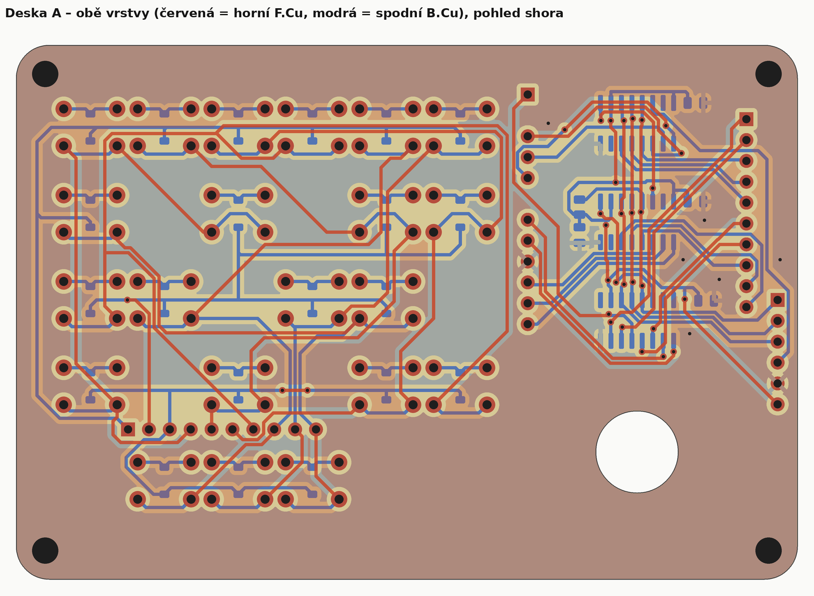
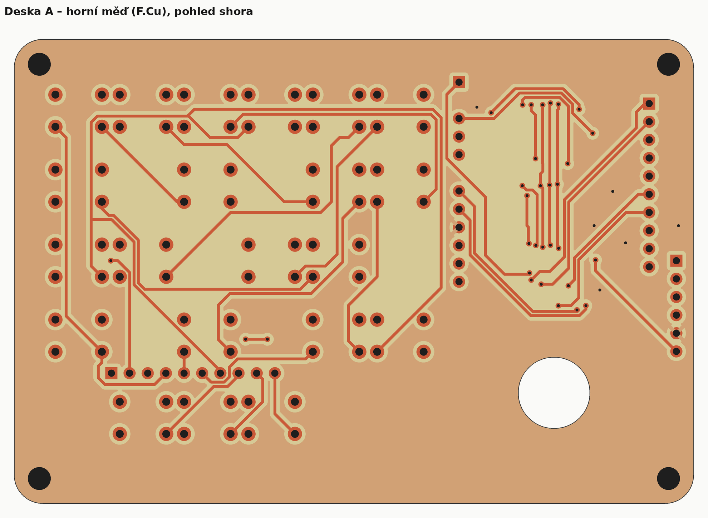
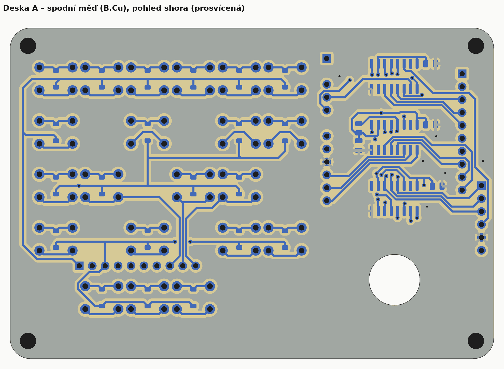
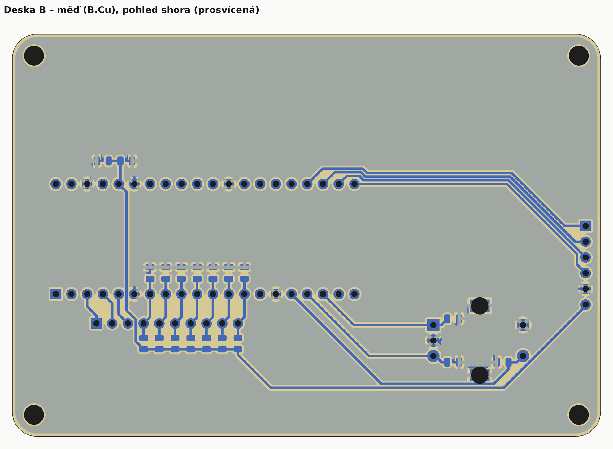
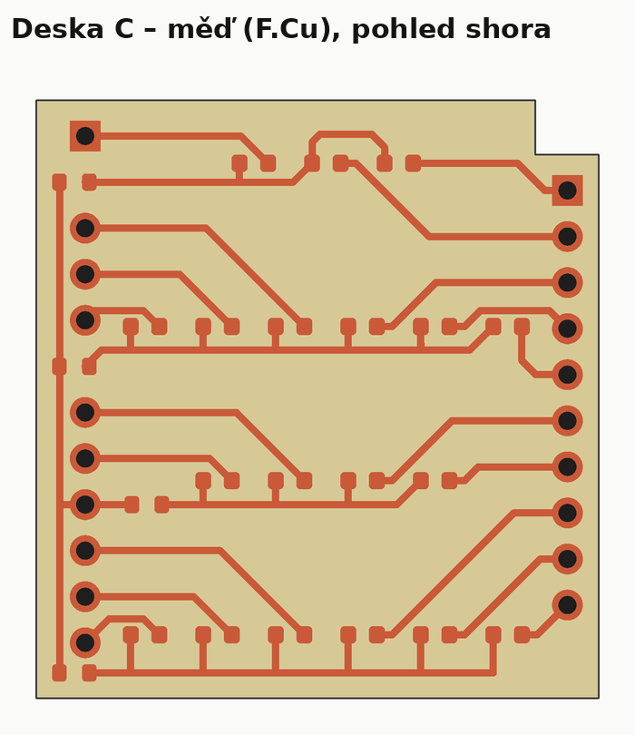
Kontrola podkladů
- schéma ↔ DPS: stejné součástky, hodnoty, pouzdra i sítě; žádná nepropojená síť, žádný zkrat, žádná mezera mědi pod 0,2 mm,
- gerbery v gerber/ odpovídají DPS (všechny cesty i pady),
- simulace izolace: G-kódy A1+A2, B2 a C1 oddělí každou síť a žádnou nepřeruší (žádný zkrat, žádné přerušení), zasahují jen do okraje zemní plochy,
- vrtání: všech 37 + 120 + 4 děr desky A, 61 + 4 desky B a 20 desky C sedí přesně na DPS,
- ořezy jdou fréza 1,8 mm 1,05 mm od obrysu (deska vyjde o ~0,15 mm na každé straně větší – nevadí), kapsa Ø10 sedí na enkodér.
5. Osazení a pájení
Postup
- A: nejdřív drátky do 37 průchodů (obě strany), pak SMD – 3× 74HC595 (U4–U6), 21× dioda 1N4148W (orientace!), C40–C43, R50 – ty jsou na spodní straně. Pak lišty J1–J4 a nakonec 21 tlačítek.
Pájet i shora (vede k nim cesta po horní straně): vývod 2 všech tlačítek (u SW1, SW9, SW10, SW16, SW17 oba vývody 2), J1 pin 6, J2 piny 2 a 4–10, J3 piny 1, 2, 5, 6 a J4 piny 1, 2, 6, 7. - C: 19 LED (pozor na polaritu), R301 = 330 Ω (osy), R302–R304 = 820 Ω, lišty J301 (1×12 s vytaženými piny 2 a 6) a J302 (1×10).
- B: SMD (7× 10k R102–R108, 10n, 100n, 10u), dutinkové lišty J101 a J103, enkodér EC11, Pico (Laskakit Ultimate Pi Pico).
- Před spojením desek změř multimetrem zkraty 3V3–GND a spojitost signálů na lištách.
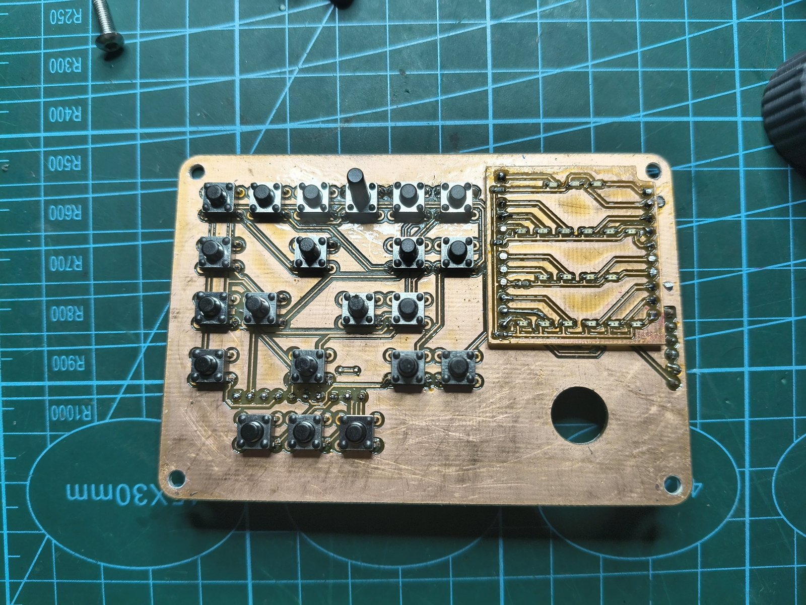
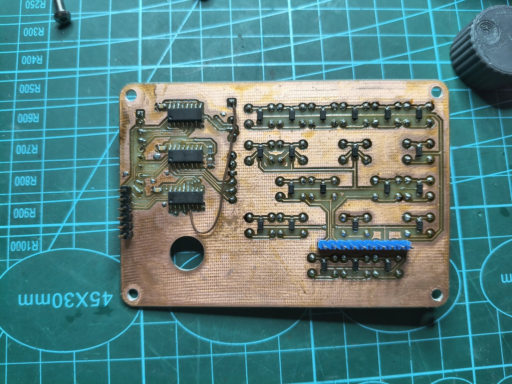
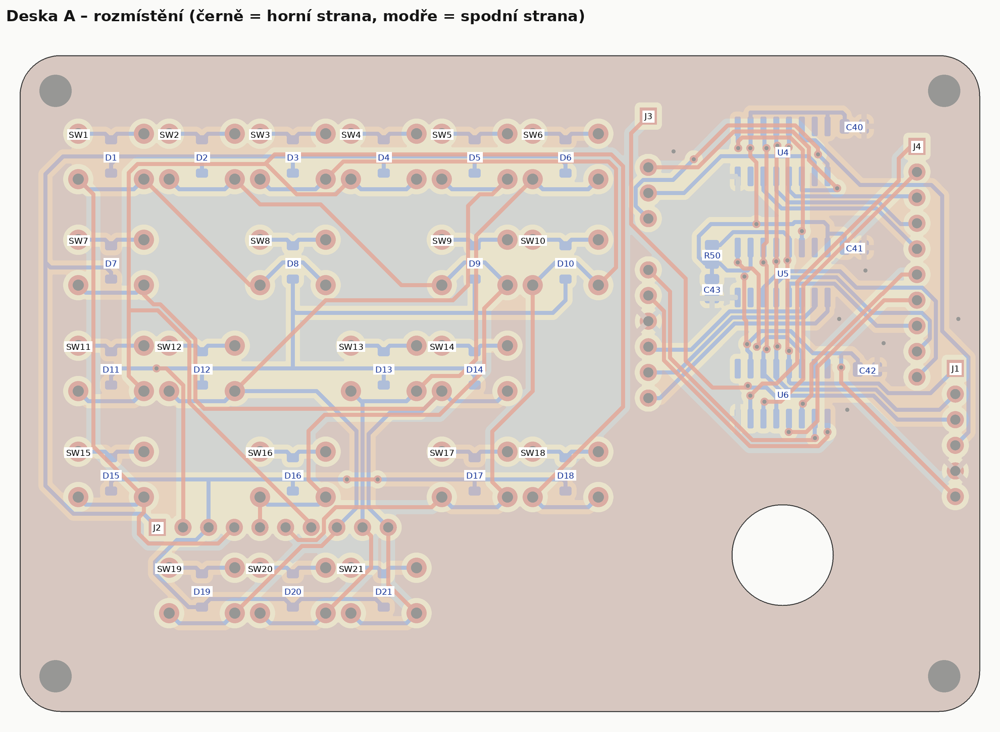
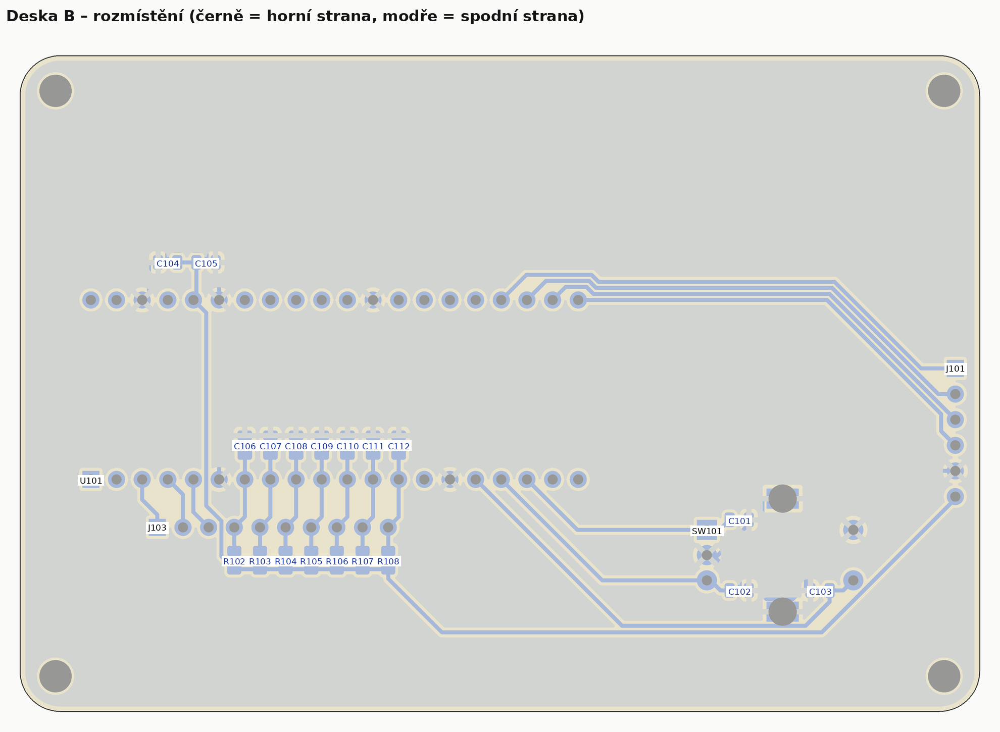
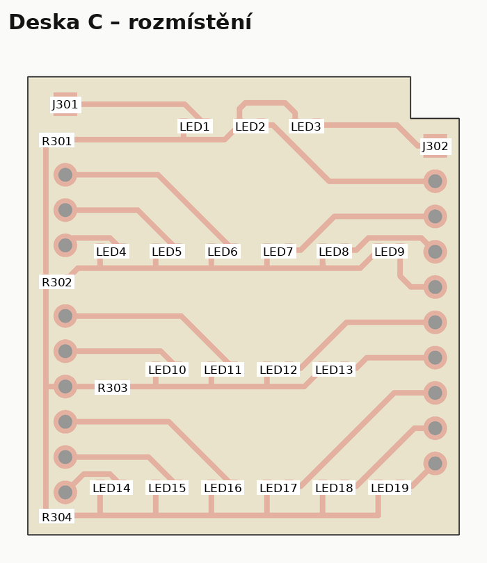
Propojení desek
| A ↔ B | Piny |
|---|---|
| J1 ↔ J101 (LED, 1×6) | 1 OE · 2 RCLK · 3 SRCLK · 4 SER · 5 GND · 6 +3V3 |
| J2 ↔ J103 (tlačítka, 1×10) | 1 ROW0 · 2 ROW1 · 3 ROW2 · 4 COL0 · 5 COL1 · 6 COL2 · 7 COL3 · 8 COL4 · 9 COL5 · 10 COL6 |
| A ↔ C | Osazené piny shora dolů |
| J3 ↔ J301 (1×12 bez pinů 2 a 6) | LED1 · LED6 · LED5 · LED4 · LED11 · LED10 · GND · LED16 · LED15 · LED14 |
| J4 ↔ J302 (1×10) | LED3 · LED2 · LED7 · LED8 · LED9 · LED12 · LED13 · LED17 · LED18 · LED19 |
Mezera mezi deskami B a A je 11 mm (výška sloupku). Propoj je dutinkovou lištou na B a kolíky z A, nebo krátkými drátky. Přesné zapojení je ve schématech v 01_DPS_KiCad.
Piny Pica (firmware)
| Funkce | GPIO |
|---|---|
| Řádky matice ROW0–ROW2 | GP2, GP3, GP4 |
| Sloupce matice COL0–COL6 | GP5 – GP11 (vnitřní pull-up + 10k na desce B) |
| Enkodér SW / B (DT) / A (CLK) | GP13 / GP14 / GP15 |
| 74HC595 SER / SRCLK / RCLK / OE | GP18 / GP19 / GP20 / GP21 (OE = PWM jas) |
LED a odpory
Každá skupina LED má jeden společný odpor na desce C (proto svítí v řadě vždy jedna). Proud ≈ (3,3 V − Vf) / (R + ~30 Ω výstup 595). S 820 Ω je to ~1,3 mA (kontrolka), s 330 Ω ~3 mA, s 80 Ω ~10–12 mA u červené/žluté LED – to je hodně jasné, ale bezpečné. Tabulka: 08_soupiska_BOM/pendant_LED_odpory.xlsx.
LED_BRIGHT ve firmwaru, ten ale mění všechny skupiny stejně.6. Firmware a testy
Arduino IDE – jednorázové nastavení
- Soubor → Předvolby → Další URL správce desek:
https://github.com/earlephilhower/arduino-pico/releases/download/global/package_rp2040_index.json - Správce desek → nainstaluj Raspberry Pi Pico/RP2040 (Earle F. Philhower).
- Nástroje → Deska: Raspberry Pi Pico; Nástroje → USB Stack: Pico SDK.
- Každý program je ve vlastní složce (Arduino to vyžaduje) – otevři .ino a nahraj.
- Když nahrání skončí hláškou No drive to deploy: odpoj USB, drž tlačítko BOOTSEL na Picu, připoj USB, pusť a nahraj znovu.
Testy (v tomto pořadí)
| Program 06_firmware_Arduino/testy/ | Co ověří |
|---|---|
| pendant_led_test | Rozsvítí všech 19 LED (VSE_NARAZ = true), nebo animaci po řadách (false). Nepíše nic do PC. |
| pendant_test | Píše názvy tlačítek a enkodér do Poznámkového bloku (klikni do něj a zapni NumLock; je upravený pro českou klávesnici). Řádek „SW01 UNLOCK R0 C0“ = tlačítko, řádek, sloupec. |
| pendant_sim | Simulace nastavení jen na LED (krok XY/Z, rychlost, osa) – do PC nic neposílá. |
| pendant_ugs_mapovani | Každé tlačítko pošle jednu zkratku – jen pokud bys chtěl zkratky v UGS nastavovat ručně. |
Hlavní program
- cnc_pendant_v11 – doporučený (pojistka podržením, diagonály, zrychlení enkodéru, stmívání, testovací režim). Kompilaci a logiku jsem ověřil v simulaci, na stroji ještě neodzkoušený.
- cnc_pendant (v10) – předchozí ověřená verze, kdyby v11 dělal potíže.
- Nastavení (časy, jas, výchozí krok) je nahoře v sekci Nastavení:
CONFIRM_MS,ENC_FAST_COUNT,LED_BRIGHT,LED_DIM,XY_START,Z_START,FEED_START.
7. Nastavení UGS
- Zavři UGS.
- Otevři složku
%APPDATA%\ugsplatform\config\Keymaps\NetBeans\(zkopíruj do adresního řádku Průzkumníka). Pokud neexistuje, vytvoř ji. Starý obsah si zazálohuj. - Zkopíruj do ní všech 34 souborů z 07_UGS_zkratky/NetBeans.
- Spusť UGS → Tools → Options → Keymap, do hledání napiš
F13– musí se ukázat Jog X+. - V panelu Jog zapni samostatný krok pro Z (Use separate step size for Z).
| Zkratka | Akce v UGS | Zkratka | Akce v UGS |
|---|---|---|---|
| F13 / F14 | Jog X+ / X− | Shift+F13/F14/F15 | Nula X / Y / Z |
| F15 / F16 | Jog Y+ / Y− | Shift+F16 | Probe Z |
| F17 / F18 | Jog Z+ / Z− | Shift+F17 / F18 | Home / Return to zero |
| F21 | Pause / Resume | Shift+F19 / F20 / F21 | Rychlost ×10 / ÷10 / +1000 |
| F22 / F23 | Start / Stop | Ctrl+F13…F16 | Krok XY 0,01 / 0,1 / 1 / 10 |
| F24 | Unlock | Ctrl+F17 / F18 | Krok XY ×10 / + |
| Ctrl+Shift+F13…F16 | Diagonály X+Y+ / X+Y− / X−Y+ / X−Y− | Ctrl+F19…F22, F23 | Krok Z 0,01 / 0,1 / 1 / 10, Z + |
8. Ovládání pendantu (firmware v11)
| Ovládací prvek | Funkce |
|---|---|
| OSA X / Y / Z | Volba osy (svítí LED osy). Druhý stisk osu zruší = zamčeno. Bez zvolené osy nefungují šipky, NULA, HOME, RTZ, PROBE – LED os 3× bliknou. |
| X± Y± Z± | Ťuknutí = jeden krok. Podržení = plynulý pojezd, dokud držíš. X a Y zároveň = šikmo. |
| Enkodér – otáčení | Se zvolenou osou: kroky v ose; rychlé točení dočasně zvětší krok o stupeň (XY max 10 mm, Z max 1 mm). Bez osy: mění rychlost. |
| Enkodér – tlačítko | Krátce = větší krok, dlouze (> 0,6 s) = menší. Při zvolené ose Z mění krok Z, jinak XY. |
| F+ / F− | Rychlost: 10 / 100 / 1000 / 2000 / 3000 / MAX mm/min. |
| START | Start programu – podržet 0,5 s. |
| HOME, RTZ, PROBE, NULA X/Y/Z | Podržet 0,5 s (během držení rychle blikají LED os, po provedení bliknou všechny LED). Vyžadují zvolenou osu. |
| HOLD | Pauza / pokračování – okamžitě, předběhne frontu. |
| STOP | Okamžitě, zahodí čekající kroky; všechny LED 5 s blikají. |
| UNLOCK | Zrušení alarmu ($X) – okamžitě. |
LED: řada osa (X Y Z), krok XY (0,05 · 0,1 · 1 · 10 · 50 · 100 mm), krok Z (0,05 · 0,1 · 1 · 10 mm), rychlost (10 · 100 · 1k · 2k · 3k · MAX). Bliká-li LED kroku/rychlosti, nevešlo se nastavení do fronty – nastav hodnotu znovu. Po 2 minutách bez dotyku se LED ztlumí.
Testovací režim: drž STOP a připoj USB. Do PC nejde nic, Serial Monitor (115200) vypisuje tlačítka a enkodér, držené tlačítko rozsvítí všechny LED. Konec = odpojit USB.
9. Panel čela
9.1 Frézování hliníku (Fusion)
Nula X0 Y0 = levý dolní roh panelu (95 × 65), Z0 = povrch hliníku. Polotovar přichyť na obětní MDF (oboustranná páska + svorky mimo dráhu).
| Soubor 04_panel_cela/1_frezovani_hlinik/ | Nástroj | Co dělá |
|---|---|---|
| H1_vrtani_der_M3_vrtak3.nc | vrták 3 | předvrtání všech děr (tlačítka, enkodér, 4× M3) |
| H2_vrtani_der_LED_vrtak2.nc | vrták 2 | 19 okének pro LED |
| H3_diry_tlacitek_a_enkoderu_freza3.nc | fréza 3 | vyfrézování děr tlačítek a enkodéru |
| H4_obrys_panelu_freza3.nc | fréza 3 | ořez obrysu (jako poslední) |
Pak odjehlit, odmastit a nastříkat černým lakem. Starší verze (včetně rytí engrave.nc, které se v hliníku neosvědčilo) jsou v starsi_verze.
9.2 Pálení popisů laserem (LightBurn)
- Test výkonu na odřezku: LightBurn → Laser Tools → Material Test (Fill, interval 0,1 mm, rychlost 800–3500, výkon 30–100 %), nebo soubor test_F_S_laser_hlinik.nc přes tlačítko Run GCode v okně Laser. Vyber nejrychlejší políčko, kde je lak čistě pryč.
- Otevři LightBurn_projekt_paleni_cela_V01.lbrn2 (tvůj odladěný projekt) nebo importuj pendant_laser_vse_v_jednom.svg. Barvy = vrstvy: modrá podklad (Line), černá čelo (Fill, interval 0,1 mm), červená tečka nuly.
- Na stůl připevni podklad (MDF, karton). Nastav nulu laseru na místo tečky. Nic v projektu neposouvej.
- Zapni jen modrou vrstvu (+ tečku) a vypal podklad: obrys panelu, rohové značky, křížky v dírách M3.
- Polož lakovaný panel do obrysu tak, aby křížky byly uprostřed děr M3, a přichyť ho.
- Vypni modrou, zapni černou a vypal čelo. Nulu mezi kroky neměň.
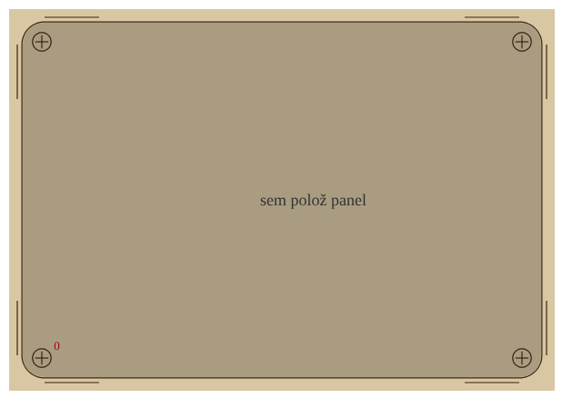
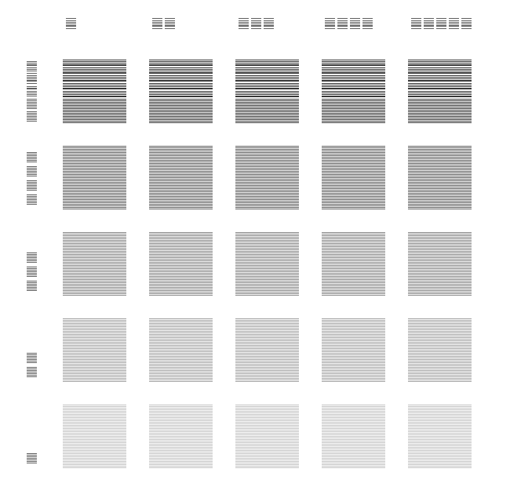
Bez LightBurnu: 2_laser_paleni/G-kody_bez_LightBurnu obsahuje hotové G-kódy podkladu (i „nanečisto“ slabým paprskem) a čela s nulou ve středu levé dolní díry M3. GRBL musí mít $32=1 (laserový režim).
9.3 Alternativa: kapsa v MDF frézkou
3_alternativa_MDF_kapsa/kapsa_panel_MDF_D4.nc vyfrézuje do MDF kapsu 95,2 × 65,2 × 2 mm (fréza Ø4, nula = střed levé dolní díry M3). Panel se vloží do kapsy a laser má stejnou nulu jako G-kódy bez LightBurnu.
10. Krabička, sloupky, knoflík (3D tisk)
| Soubor 05_krabicka_3D_tisk/ | Popis |
|---|---|
| CNCpendant.step | krabička – tiskni přímo z tohoto souboru (Bambu Studio, Orca i PrusaSlicer umí STEP načíst), dnem dolů |
| CNCpendant.3mf | projekt pro Bambu Studio / Orca s nastaveným tiskem knoflíku (D osa, 13 mm) |
| pendant_krabicka.scad | OpenSCAD – SHOW = 1 jen krabička, 0 celá sestava |
| pendant_krabicka_fusion/ | skript pro Fusion (Utilities → Scripts and Add-Ins → + → složka → Run) – postaví celou sestavu po komponentách |
| distancni_sloupky/distance_sada_5+5ks.stl | 5× šestihran 5,5 × 11 mm (B→A, otvor 2,6 – šroub se zařízne, drží se klíčem 5,5) + 5× Ø6 × 3,5 mm (A→panel). Tisk nastojato, 100 % výplň, ideálně PETG. |
| knoflik/ | knoflík Ø25 s drážkami a důlkem na prst; vyber výšku podle toho, kolik osy čouhá nad panel (9–14 mm), pro D osu nebo vroubkovanou. Tisk spodkem dolů bez podpor. |
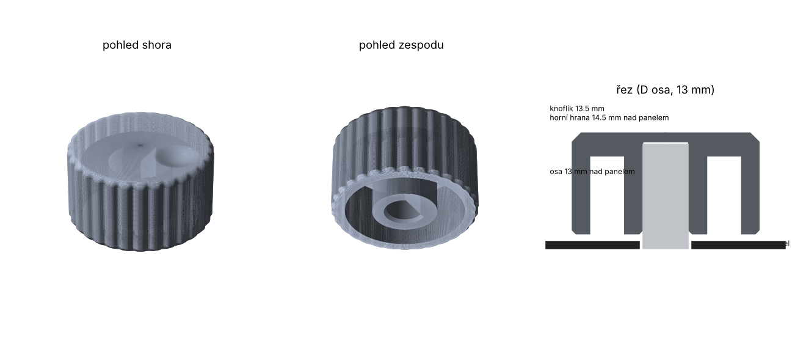
11. Kompletace
Skladba odspodu (podle modelu):
- Dno krabičky se 4 sloupky (výška 7 mm, zespodu zahloubení pro hlavy šroubů).
- Deska B na sloupcích krabičky. Zespodu 4× šroub M3×10 přes dno a desku B do šestihranných sloupků 11 mm (sloupek přidrž klíčem 5,5).
- Deska A na šestihranech, propojená s B lištami J1–J101 a J2–J103. Osa enkodéru prochází kapsou Ø10 v desce A.
- Deska C visí na lištách J3/J4 desky A, LED míří nahoru do okének panelu.
- Sloupky 3,5 mm na desku A, na ně panel, shora 4× šroub M3×10 ISO 7380 přes panel, sloupek a desku A do šestihranu.
- Knoflík nasaď na osu enkodéru (1 mm nad panel, aby šel zmáčknout). USB-C je přístupné výřezem v levé stěně.
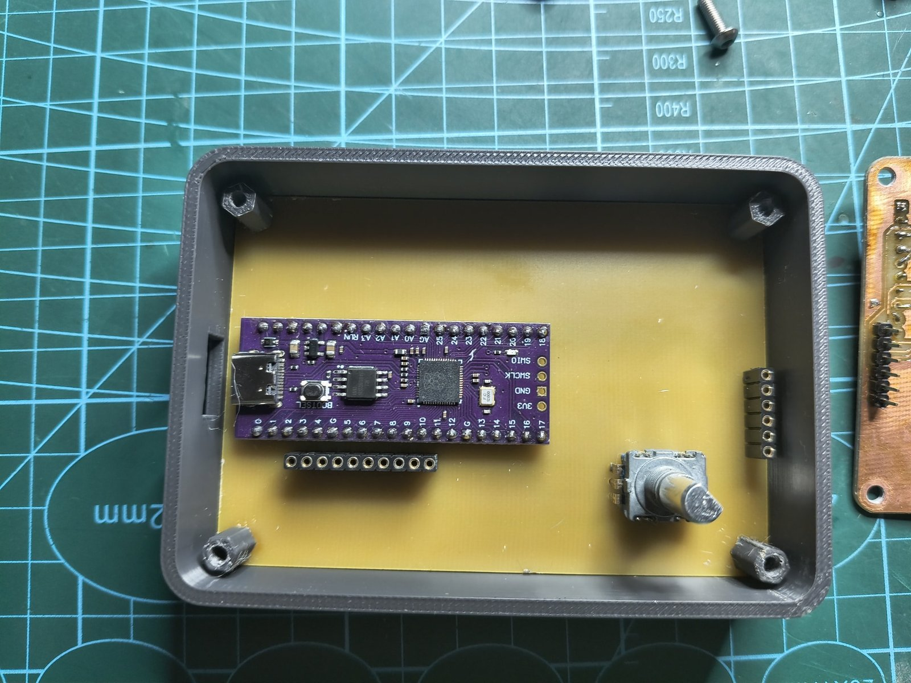
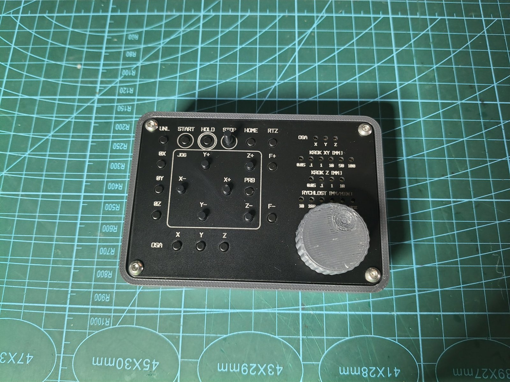
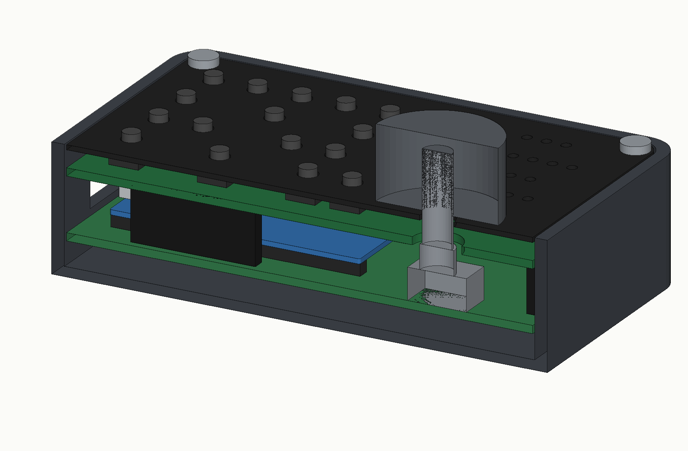
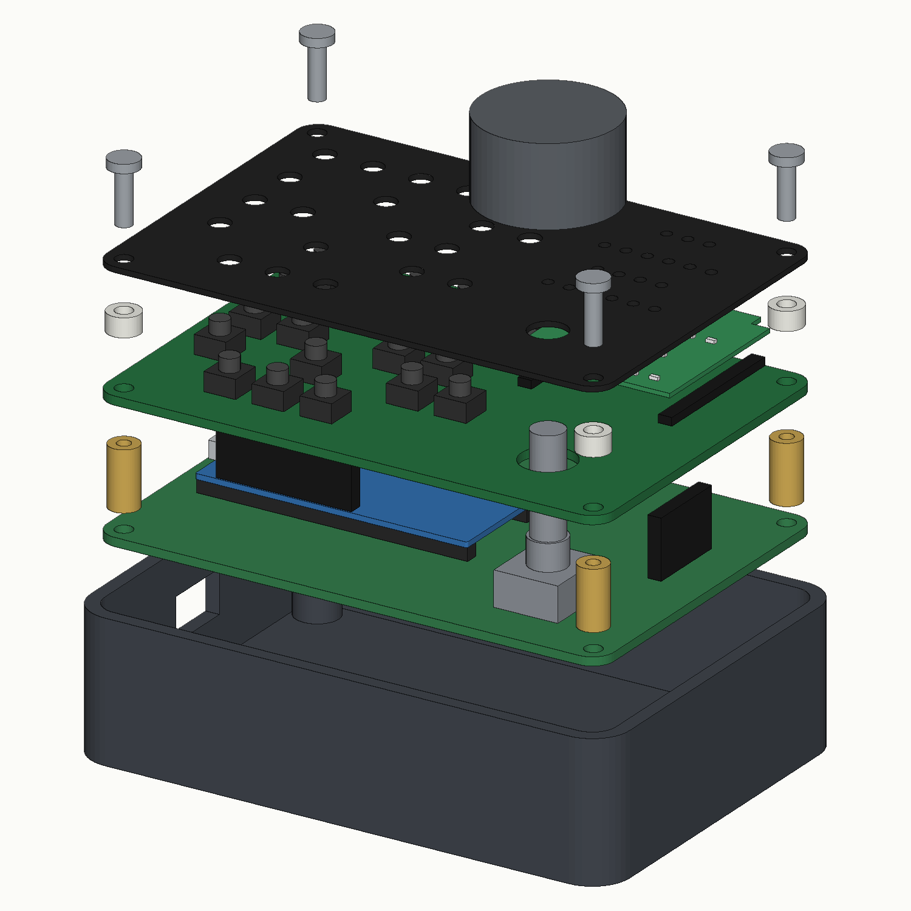
12. Řešení problémů
| Příznak | Příčina / řešení |
|---|---|
| Tlačítka se „mačkají“ sama hned po připojení | Plovoucí sloupce (chybí deska B s pull-upy). Firmware má vnitřní pull-up (INPUT_PULLUP) – používej aktuální verze. |
| Nefunguje jedno tlačítko (nebo dvojice v řadě) | Nezapájený vývod na horní straně (neprokovené díry!). U SW01 to byla přesně tahle chyba. |
| Celá řada LED nesvítí, data ale „procházejí“ | RCLK (latch) nedochází – špatně zapájený průchod. QH' 595 jede i bez RCLK, takže další registry fungují. Zkontroluj RCLK a OE (pin 12 a 13) na všech 595. |
| Jedna LED nesvítí | Průchod pod pouzdrem 595 nebo lištou – nahraď drátkem. |
| Pendant nic nedělá v UGS | Chybí zkratky (kap. 7) nebo okno UGS není aktivní. |
| Test píše nesmysly / Y a Z prohozené | Česká klávesnice – v pendant_test je QWERTZ = true; zapni NumLock. |
| Upload: No drive to deploy | Postup s tlačítkem BOOTSEL (kap. 6). |
| Krok / rychlost LED bliká | Přetečení fronty kláves – nastav hodnotu znovu. |
| Vřeteno se při izolaci neroztočí | Program má M03 bez S – pošli M3 S12000 předem (kap. 4). |
| Druhá strana desky A nesedí | Deska otočená přes špatnou osu – musí se otočit přes vodorovnou osu (horní hrana dolů). |
| Laser pálí při přejezdech | GRBL není v laserovém režimu – $32=1. |
Licence
Hardware, mechanika a dokumentace: CC BY-SA 4.0 (soubor LICENSE). Firmware: MIT (06_firmware_Arduino/LICENSE). Můžeš to volně používat, upravovat i sdílet – jen uveď autora a úpravy hardwaru/dokumentace sdílej pod stejnou licencí.